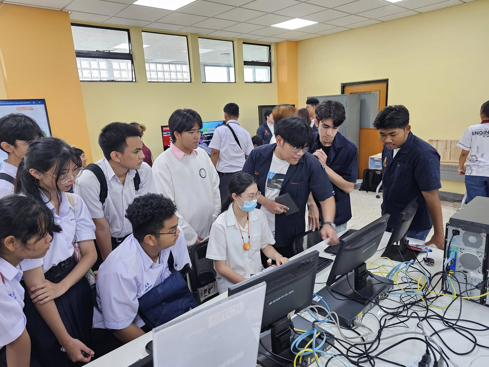
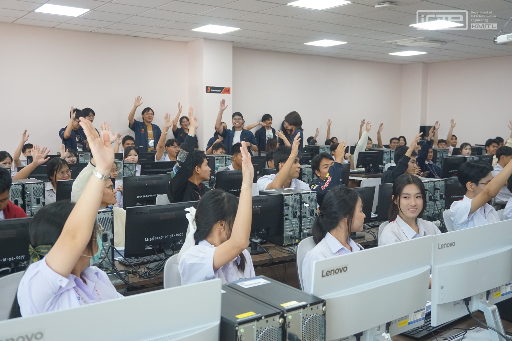
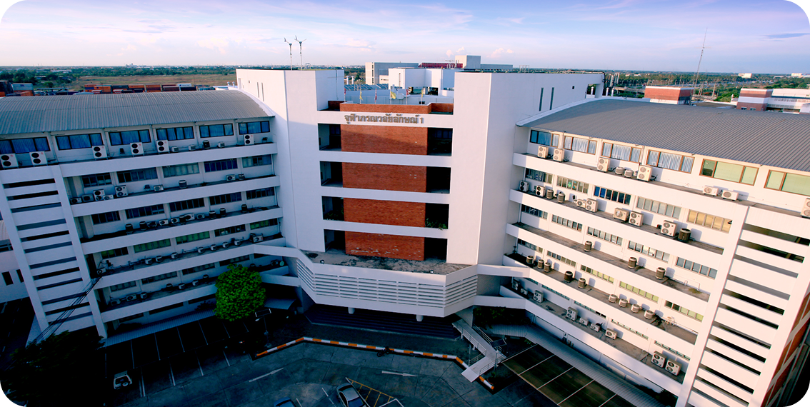
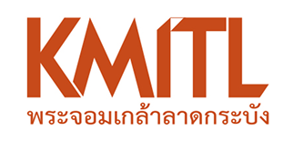
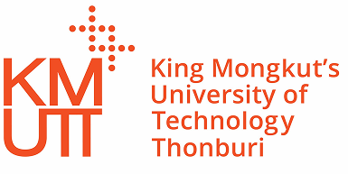

เรียน 4 ปี ได้ 2 ปริญญา
วศ.บ.วิศวกรรมระบบไอโอทีและสารสนเทศ
+ วท.บ.ฟิสิกส์อุตสาหกรรม
Department of IoT & Information Engineering
วิศวกรรมระบบไอโอทีและสารสนเทศ
วศ.บ.วิศวกรรมระบบไอโอทีและสารสนเทศ & วท.บ. ฟิสิกส์อุตสาหกรรม
วท.บ. ฟิสิกส์อุตสาหกรรม
ในยุคดิจิทัล 4.0 ที่ทุกสิ่งเชื่อมโยงถึงกัน เทคโนโลยี Internet of Things (IoT) ได้กลายเป็นหัวใจสำคัญของการพัฒนาอุตสาหกรรม เศรษฐกิจ และวิถีชีวิตยุคใหม่ หลักสูตรนี้มุ่งเน้นการบูรณาการความรู้แบบสหวิทยาการ เพื่อสร้างบุคลากรที่สามารถออกแบบและพัฒนานวัตกรรมดิจิทัลได้อย่างครบวงจร
โครงสร้างการเรียนรู้ครอบคลุม 4 ด้านหลัก ได้แก่ ฮาร์ดแวร์ ซอฟต์แวร์ การสื่อสารและเครือข่าย รวมถึงข้อมูลและปัญญาประดิษฐ์ (AI)
เพื่อให้ผู้เรียนเข้าใจระบบ IoT อย่างลึกซึ้งทั้งเชิงทฤษฎีและการปฏิบัติ หลักสูตรนี้เปรียบเสมือน ฟันเฟืองที่เชื่อมโลกฮาร์ดแวร์และซอฟต์แวร์เข้าด้วยกัน พร้อมพัฒนาทักษะทางวิศวกรรมและการคิดเชิงระบบ เพื่อให้นักศึกษาสามารถนำความรู้ไปประยุกต์ใช้ในภาคอุตสาหกรรม หรือต่อยอดสู่การเป็นผู้ประกอบการ Startup ด้านเทคโนโลยีได้อย่างยั่งยืน


ความร่วมมือระหว่าง คณะวิศวกรรมศาสตร์ และ คณะวิทยาศาสตร์ สถาบันเทคโนโลยีพระจอมเกล้าเจ้าคุณทหารลาดกระบัง นักศึกษาจะได้รับ 2 ปริญญาในเส้นทางเดียว
วิศวกรรมศาสตรบัณฑิต (วศ.บ.) สาขาวิชาวิศวกรรมระบบไอโอทีและสารสนเทศ
วิทยาศาสตรบัณฑิต (วท.บ.) สาขาวิชาฟิสิกส์อุตสาหกรรม
หลักสูตรนี้ผสมผสานความแข็งแกร่งของ วิศวกรรม เทคโนโลยี และวิทยาศาสตร์เชิงลึก อย่างลงตัว เพื่อสร้างบุคลากรที่เข้าใจระบบตั้งแต่ระดับฟิสิกส์ อุปกรณ์ ฮาร์ดแวร์ ซอฟต์แวร์ ไปจนถึงการประยุกต์ใช้จริงในภาคอุตสาหกรรมและนวัตกรรมแห่งอนาคต
เรียน 4 ปี ได้ 2 ปริญญา
วศ.บ.วิศวกรรมระบบไอโอทีและสารสนเทศ
+ วท.บ.ฟิสิกส์อุตสาหกรรม
ทลายกำแพงระหว่างคณะ
ศึกษาและปฏิบัติด้านอิเล็กทรอนิกส์อัจฉริยะ
และสมาร์ทเซ็นเซอร์การออกแบบ
และควบคุมอุปกรณ์สมาร์ทดีไวซ์
จบแล้วฮอตสุดไม่มีตกยุค หากได้ลองค้นหาคำว่า
" Top 10 อาชีพไม่ตกงาน "
แน่นอนว่าจะต้องเจอกับอาชีพด้านไอทีอย่างแน่นอน เพราะเป็นสายงานที่มีความหลากหลายมาก ในยุคดิจิทัลไทยแลนด์ 4.0 นี้

หลักสูตรฟิสิกส์อุตสาหกรรม KMITL มุ่งพัฒนาความรู้และทักษะด้านฟิสิกส์ควบคู่กับการประยุกต์ใช้เทคโนโลยีในภาคอุตสาหกรรมจริง เพื่อตอบโจทย์ความต้องการของบริษัทและอุตสาหกรรมยุคใหม่ โดยมีความร่วมมือกับหน่วยงานอุตสาหกรรมชั้นนำของประเทศ พร้อมการเรียนการสอนที่เน้นการลงมือปฏิบัติและเทคโนโลยีที่ใช้งานได้จริง เช่น Machine Vision, Python สำหรับการวิเคราะห์ข้อมูล, ระบบ IoT, Smart Farm และการประมวลภาพทางการแพทย์
จุดเริ่มต้น:เริ่มในปี 2517 ในชื่อ ภาควิชาเทคนิคอุตสาหกรรม เปิดสอนหลักสูตรอุตสาหกรรมศาสตรบัณฑิต (ต่อเนื่อง 3 ปี) เน้นด้านเทคโนโลยีโทรทัศน์ การยกระดับ: ปี 2541 เปลี่ยนเป็นหลักสูตร วิศวกรรมศาสตรบัณฑิต (4 ปี) รับทั้งผู้จบ ม.6 และ ปวส. เพื่อปรับตัวให้เข้ากับมาตรฐานวิชาชีพวิศวกรรม
เปลี่ยนชื่อภาควิชา:ในปี 2544 เปลี่ยนชื่อเป็น "ภาควิชาวิศวกรรมสารสนเทศ" อย่างเป็นทางการ เพื่อผลิตวิศวกรที่มีความรู้ครอบคลุมทั้งคอมพิวเตอร์ โทรคมนาคม อิเล็กทรอนิกส์ และการจัดการข้อมูล การควบรวมปี 2553 ปรับโครงสร้างองค์กรให้มาสังกัดร่วมกับ ภาควิชาวิศวกรรมคอมพิวเตอร์ โดยยังคงพัฒนาหลักสูตรสารสนเทศให้ทันสมัยอย่างต่อเนื่อง จนกระทั่งงดรับนักศึกษาชั่วคราวในปี 2563-2564 เพื่อเตรียมปรับโฉมใหม่
กำเนิดหลักสูตรใหม่:ปรับปรุงเป็นหลักสูตร " วิศวกรรมระบบไอโอทีและสารสนเทศ " ภายใต้นโยบาย Disruptive Curriculum ของสถาบันฯ ทลายกำแพงคณะ (PhysIoT) : สร้างความร่วมมือครั้งสำคัญกับคณะวิทยาศาสตร์ (ฟิสิกส์อุตสาหกรรม) เปิดเป็นโครงการหลักสูตรสองปริญญา (Dual Degree) เพื่อให้บัณฑิตมีความรู้รอบด้านทั้งวิทย์และวิศวกรรมศาสตร์

